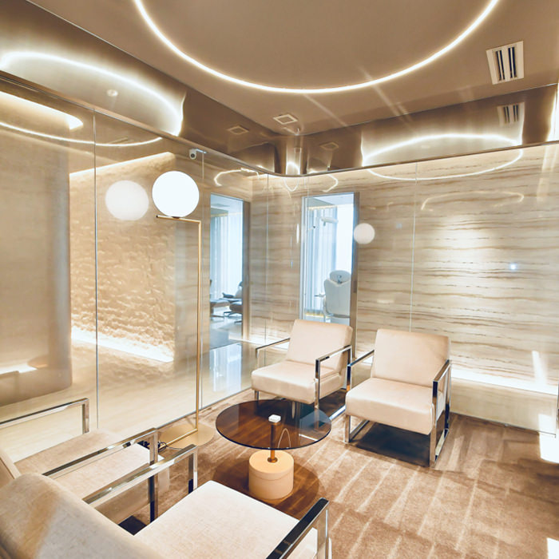
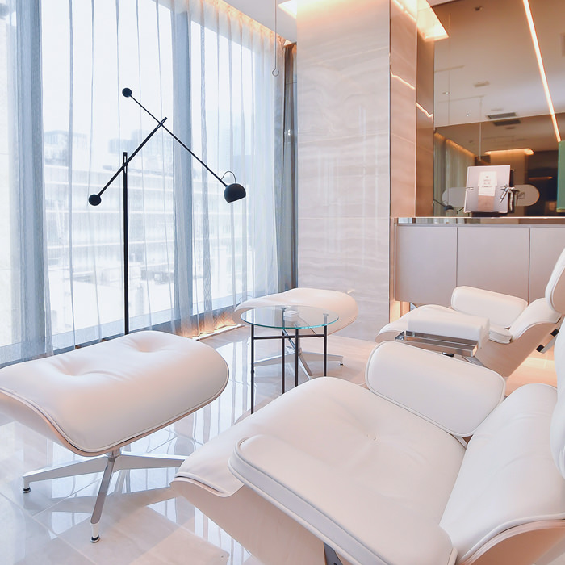

幹細胞療法
REBUILDING BEAUTY AND HEALTH
自分の幹細胞でいたんだ組織を修復する究極の再生医療。
幹細胞は、「自己複製能」と「多分化能」という特別な能力を持つ、再生医療の要となる細胞です。
幹細胞は、損傷した組織を修復し、老化によって機能が低下した組織を補う役割を担っています。
N2クリニックでは、脂肪組織由来の幹細胞を使用した再生医療を提供しています。
自身の腹部脂肪から少量採取した幹細胞を使用し、点滴や局所注射で体内に投与することで、幹細胞が修復が必要な部位へと集まり、組織を修復・再生します。
この治療法は、老化による身体の変化に対応するだけでなく、美容面でも大きな期待が寄せられています。
あなた自身の細胞が、未来の健康と美を支えます。
自己複製能
自分と全く同じ能力を持った細胞を複製する能力
多分化能
骨・筋肉・皮膚・毛包・血管・神経・肝臓・膵臓など、さまざまな細胞に分化する能力
なぜ脂肪組織由来幹細胞なのか？
脂肪組織由来幹細胞は、以下に示す６つの特徴を併せ持つことで、より確かな再生医療を実現します。ひとつひとつのメリットをご覧いただき、ご自身の治療イメージと照らし合わせてみてください。
１.採取効率が高く、身体への負担を抑えられる。
脂肪組織には間葉系幹細胞が多く含まれているため、少量の皮下脂肪を採取するだけで十分な細胞数を確保できます。局所麻酔による外来手技で済むため、痛みや腫れを最小限に抑えたまま治療を進められるのが大きなメリットです。
2.少量採取でOK、傷あとが目立ちにくい。
ごく少量の皮下脂肪で必要な幹細胞数を得られるので、侵襲が非常に小さくなります。採取部位は数ミリ程度の小さな切開で済むため、術後の傷あともほとんど目立ちません。
3.自己由来だからこその高い安全性と低リスク。
採取した細胞はすべて患者様ご自身のものです。そのため、免疫異常反応や拒絶反応の心配がほとんどありません。外部のドナー細胞を使う場合に必要な免疫抑制薬なども不要で、安全性が極めて高い治療が可能です。
4.遺伝子操作不要で発がんリスクが極めて低い。
脂肪由来の間葉系幹細胞は、採取して分離・培養するだけで十分なセル数を得られるため、ウイルスベクターなどによる遺伝子導入が不要です。したがって、遺伝子変異や腫瘍化のリスクを限りなく抑えられ、長期的な安全性が確認されています。
5.ホーミング効果：損傷部位へ自ら移動し、修復をサポート。
投与された幹細胞は、炎症や傷害が起こっている組織を感知し、自ら血流から目的部位へ移動（ホーミング）します。関節や肝臓など、ダメージを受けた箇所へ集中して働きかけることで、効率的に組織修復を促します。
6.免疫調節作用およびパラクライン効果：炎症を抑え、周囲細胞を活性化。
幹細胞は炎症や免疫の過剰反応を抑えるサイトカインを分泌し、正常な組織環境へと導きます（免疫調節作用）。さらに、成長因子やエクソソームなどを放出して周囲の細胞を活性化し、修復を後押しする（パラクライン効果）ため、慢性痛や自己免疫疾患、美容領域での皮膚改善まで幅広く応用できます。
脂肪組織由来幹細胞による
治療の報告例
国内外の基礎研究・臨床研究において、さまざまな疾患に対する脂肪組織由来幹細胞の有効性が報告されています。
※当院では、肝障害・慢性疼痛に対する点滴治療および、関節傷害に対する局所注入治療の提供計画番号を取得しています。
神経系疾患
脳梗塞 / 脳挫傷 / 脊髄損傷 / 多発性硬化症 / 低酸素性虚血性脳症 / パーキンソン病 / アルツハイマー型認知症 / 筋萎縮性側索硬化症（ALS） / ポリオ（小児麻痺） / 末梢神経障害
筋骨格系疾患
慢性疼痛 / 変形性膝関節症 / 腱損傷 / 関節炎 / 難治性骨折 / 骨の欠損 / 骨粗鬆症
皮膚疾患
掌蹠膿疱症 / アトピー性皮膚炎 / ニキビ跡 / 白斑 / 男性型脱毛症（AGA） / その他の脱毛症
美容・抗老化
乳がん術後（乳房再建） / 豊胸手術 / 抗老化医学（皮膚と血管の若返り）
循環器疾患
心筋梗塞 / 狭心症 / 動脈硬化 / 末梢動脈疾患
代謝・内分泌疾患
糖尿病 / 慢性腎臓病 / 骨粗鬆症
肝臓・消化器系疾患
肝臓疾患（肝炎 / 肝硬化症 / 肝機能障害） / 原発性胆汁性肝硬変
呼吸器疾患
肺気腫 / 肺線維症 / 慢性閉塞性肺疾患
免疫関連疾患
自己免疫疾患（関節リウマチ / 全身性エリテマトーデスなど） / GVHD（移植片対宿主病）
感染症
新型コロナウイルス感染 / 新型コロナウイルス感染からの回復後の後遺症
性別特有の疾患・症状
女性更年期障害 / 男性更年期障害 / 前立腺肥大症 / 勃起不全
泌尿器疾患
尿失禁
歯科疾患
歯周病
治療の流れ
-

-
1. カウンセリング専門医が丁寧にご希望や状態を伺い、幹細胞治療についてご説明します。ご不明点やご不安点にもすべてお答えし、納得いただいたうえで次のステップへ進みます。
-
2. 脂肪組織の採取お腹の皮下脂肪から少量を採取し、脂肪組織ごく小さな切開で脂肪採取するため、傷あとはほとんど目立ちません。局所麻酔で行うため、痛みも最小限に抑えられます。
-

-
3. 幹細胞の分離・培養採取した脂肪は細胞加工施設（CPF）で幹細胞を分離・培養。
初回：約5週間で凍結保存後、幹細胞保存。
2回目以降：冷凍保存と約2週間で投与可能。 -
4. 幹細胞の投与治療目的に応じて、高濃度または調整後に脂肪組織由来幹細胞を投与します。すべて再生労働省の再生医療提供計画に沿ったプロトコルで実施し、再生医療専門医が安全管理のうえで施術を行います。
-

-
5. アフターケア投与後は定期的に経過観察を行い、必要に応じて血液検査などで効果や安全性を確認します。患者様一人一人に合わせた万全のサポート体制を整えています。
CERTIFIED
国の認可を受けた確かな医療
N2クリニックは、厚生労働省から正式に「再生医療等提供計画番号」を取得した医療機関です。
N2クリニックでは、更年期障害や慢性的な痛みに対する点滴治療、さらに顔の加齢による変化を改善する局所注入治療の提供計画番号を取得しています。
幹細胞を用いた再生医療は、厚生労働省認定の特定認定再生医療等委員会でその適合性が厳しく審査され、適切と認められた後に厚生労働省に治療計画を提出し、計画番号を取得した場合のみ治療が可能となります。
N2クリニックは正規のプロセスを経て厚生労働省に対し、再生医療提供計画を提出し、計画番号を取得しています。
また、治療の有効性を最大限に引き出すために、国内外の最新の研究内容を把握するとともに院内でも臨床研究を実施し、エビデンスの構築に努めています。
治療料金の目安
幹細胞療法（患者様のお悩みに合わせた投与）
初回
4,400,000円(税込)
脂肪採取と初期幹細胞投与を含みます。
2回目以降
2,200,000円(税込)
膝関節への投与
初回
3,300,000円(税込)
脂肪採取と初期幹細胞投与を含みます。
2回目以降
1,980,000円(税込)
片膝につき
しわ、たるみ
4回コース
4,400,000円(税込)
治療期間・回数
1回から治療可能です。
治療回数や間隔は、経過や治療目的に応じて診察時にご相談いたします。
細胞の状態などにより個人差がありますが、一度の脂肪採取により最大で11回ほどの幹細胞点滴投与をおこなえます。
リスク・副作用
＜脂肪組織採取に伴うもの＞ 内出血、腫脹、術後感染、術後縫合など
＜幹細胞投与に伴うもの＞ 注射部位の痛み、アレルギー反応、肺動脈塞栓など
※金額は症状や治療プランなどにより変動します。
※国外にお住まいの場合、国際診療手数料を別途頂戴しております。
上記以外でもたくさんの可能性があります。一人ひとりに合わせた治療ができますのでお気軽にお問い合わせください。